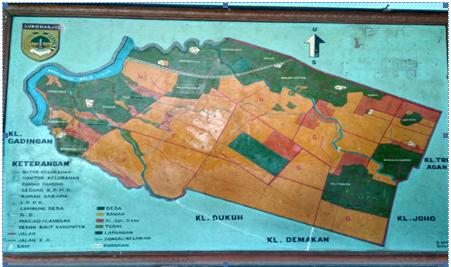

Profil & Potensi Desa Palur
Aspek Geografi, Monografi Lahan, Karakteristik Demografi, dan Keunggulan Sumber Daya Wilayah
Wilayah Strategis Penyangga Segitiga Solo Raya
Desa Palur terletak di Kecamatan Mojolaban, Kabupaten Sukoharjo, Provinsi Jawa Tengah. Secara kewilayahan, Desa Palur menempati posisi yang sangat strategis karena berada tepat di jalur perlintasan utama yang menghubungkan tiga wilayah otonom: Kabupaten Sukoharjo, Kabupaten Karanganyar, dan Kota Surakarta.
Keberadaan aliran Sungai Bengawan Solo di sisi barat menjadi batas alam bersejarah sekaligus sumber kesuburan bagi tanah pertanian Palur. Sebagai desa dengan luas wilayah terluas di Kecamatan Mojolaban (409 Hektare berdasarkan publikasi BPS dan PPID Kecamatan), Palur memadukan denyut perekonomian agraris dengan dinamika perdagangan dan sentra industri rumahan.

Monografi Wilayah & Penggunaan Lahan
Rincian alokasi dan tata guna lahan di Desa Palur berdasarkan data monografi resmi wilayah.
Komposisi Luas Lahan (408,88 Ha)
Sebagian besar permukaan lahan di Desa Palur didominasi oleh lahan persawahan beririgasi dan pemukiman pekarangan warga.
Tabel Rincian Luas Penggunaan Tanah Desa Palur
| No | Jenis Penggunaan Tanah | Luas (Hektare / Ha) | Persentase | Keterangan |
|---|---|---|---|---|
| 1 | Luas Sawah Produktif | 220,69 Ha | 53,97% | Milik warga & kas desa |
| 2 | Luas Pekarangan & Pemukiman | 157,77 Ha | 38,59% | Kawasan perumahan warga |
| 3 | Luas Tegal / Kebun | 2,63 Ha | 0,64% | Tanaman palawija |
| 4 | Lain-lain (Jalan, Makam, Sungai, Fasum) | 27,79 Ha | 6,80% | Fasilitas publik & sungai |
| TOTAL LUAS WILAYAH | 408,8825 Ha | 100,00% | Dibulatkan 409 Ha (BPS) | |
Demografi & Kependudukan
Struktur penduduk Desa Palur berdasarkan tingkat pendidikan, mata pencaharian, dan kegiatan usaha masyarakat.
Berdasarkan publikasi Kecamatan Mojolaban Dalam Angka (BPS Kabupaten Sukoharjo), jumlah penduduk Desa Palur tercatat mencapai 17.949 jiwa, menjadikannya desa dengan penduduk terbanyak dan terpadat di Mojolaban. Sementara tabel rincian komposisi pendidikan dan mata pencaharian di bawah ini merujuk pada data Monografi Desa 2017 (tercatat 15.327 jiwa: 7.581 laki-laki, 7.746 perempuan) yang disajikan sebagai dokumentasi profil dasar wilayah.
Tingkat Pendidikan Penduduk
Tabel 2.1 MonografiSebaran jenjang pendidikan warga Desa Palur dari tingkat dasar hingga perguruan tinggi:
| Jenjang Pendidikan | Jumlah Penduduk |
|---|---|
| Tidak Tamat SD / Belum Sekolah | 575 orang |
| Sekolah Dasar (SD / Sederajat) | 1.250 orang |
| Sekolah Menengah Pertama (SMP / Sederajat) | 979 orang |
| Sekolah Lanjutan Tingkat Atas (SLTA / SMA / SMK) | 1.550 orang |
| Perguruan Tinggi (Diploma / Sarjana S1-S3) | 370 orang |
Mata Pencaharian Penduduk
Tabel 2.2 MonografiProfesi utama warga masyarakat Desa Palur di sektor pertanian, industri swasta, dan perdagangan:
| No | Mata Pencaharian | Jumlah Orang |
|---|---|---|
| 1 | Buruh Tani | 1.090 orang |
| 2 | Karyawan Swasta | 774 orang |
| 3 | Petani (Pemilik Lahan) | 567 orang |
| 4 | Peternak | 318 orang |
| 5 | Pengusaha / Wiraswasta | 89 orang |
| 6 | Pegawai Negeri Sipil (PNS) | 68 orang |
| 7 | Pedagang | 25 orang |
| 8 | Pensiunan | 25 orang |
| 9 | Buruh Migran (Perantauan) | 12 orang |
Aktivitas Dunia Usaha & Industri Lokal (Tabel 2.3)
Dokumen Monografi 2017Letak Geografis & Batas Wilayah
Kedudukan administratif Desa Palur di Kecamatan Mojolaban beserta garis batas wilayah tetangga.
Batas Wilayah Administratif
-
Sebelah Utara: Kabupaten Karanganyar (Kecamatan Jaten)
-
Sebelah Selatan: Desa Dukuh dan Desa Demakan (Kec. Mojolaban)
-
Sebelah Timur: Desa Joho dan Desa Triyagan (Kec. Mojolaban)
-
Sebelah Barat: Aliran Sungai Bengawan Solo (Kota Surakarta)

Klik pada gambar peta di atas untuk memperbesar (Lightbox resolusi penuh).Potensi Keunggulan Wilayah
Eksplorasi tiga pilar penggerak ekonomi Desa Palur: Pertanian, Peternakan, dan Home Industri.

Pertanian Padi & Tanaman Pangan
Dari total luas tanah di Desa Palur sebesar 408,8825 hektare, area persawahan mendominasi seluas 220,69 hektare. Lahan persawahan ini terbagi atas kepemilikan masyarakat desa dan tanah kas desa (tanah bengkok).
Dengan tersedianya jaringan irigasi persawahan teknis yang mengalir sepanjang musim, para petani di Desa Palur mampu memproduksi komoditas padi berkualitas, diselingi tanaman palawija dan hortikultura yang berkontribusi nyata bagi ketahanan pangan daerah Sukoharjo.

Simbiosis Pertanian & Peternakan Terpadu
Sektor peternakan di Desa Palur terintegrasi erat dengan sektor pertanian. Kebanyakan petani memelihara hewan ternak berupa sapi potong dan kambing. Pakan ternak diperoleh secara efisien dari hasil sampingan pertanian seperti jerami padi, rumput gajah, dan dedaunan.
Kotoran ternak kemudian dimanfaatkan kembali sebagai pupuk kandang organik untuk menyuburkan lahan sawah dan tegalan. Selain sapi dan kambing, masyarakat Palur aktif membudidayakan ayam kampung, bebek pedaging, bebek petelur, serta budidaya kolam ikan lele.


Sentra Home Industri & Kewirausahaan Warga
Letak Desa Palur yang dekat dengan pusat perdagangan perkotaan merangsang lahirnya industri rumahan yang produktif dan menyerap tenaga kerja lokal desa.
Beberapa usaha yang berkembang pesat antara lain:
- Industri Snack Berkah: Produsen camilan makanan ringan kemasan terjangkau yang dipasarkan di warung dan ritel lokal.
- Bakpao Seven Taste: Usaha kuliner bakpao hangat aneka rasa khas Palur.
- Bengkel Las Deny Steel: Jasa konstruksi rangka baja, kanopi, pagar, dan perlengkapan rumah tinggal.